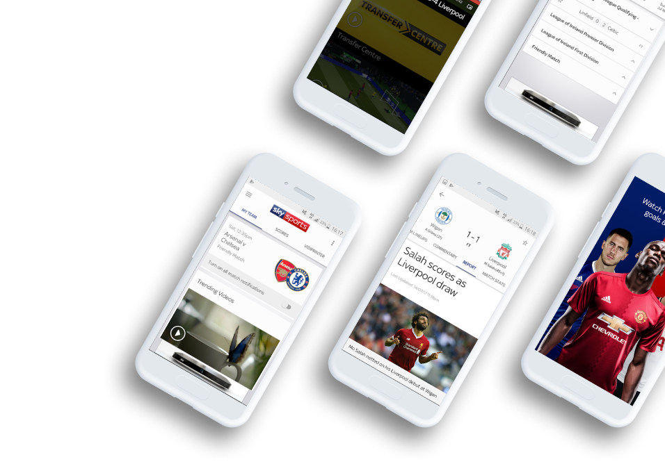
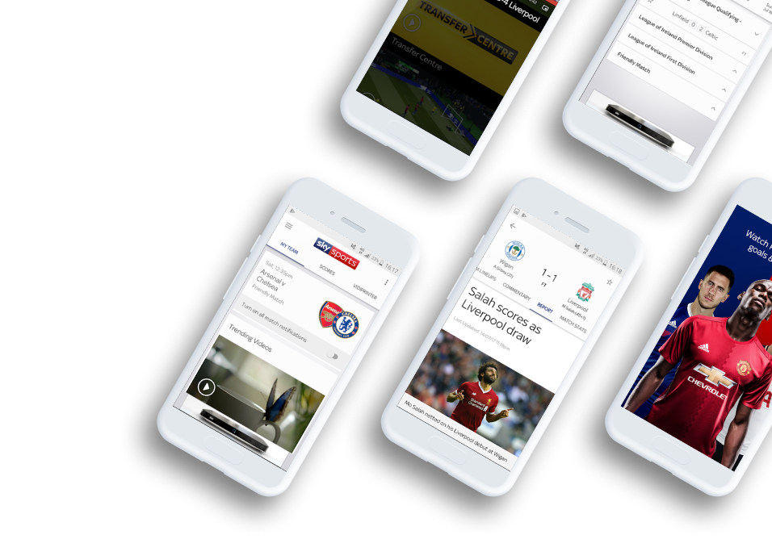
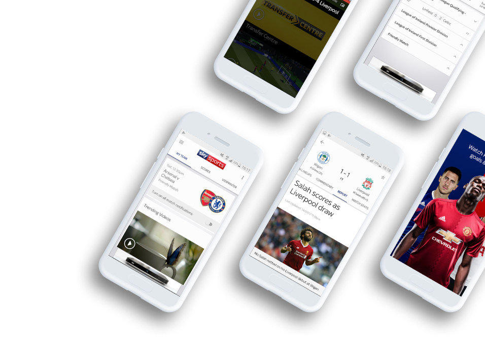

Get a personalized football experience tailored just for you
Achieve super-fan status by getting tailored updates and up-to-the-minute information on your team.

 

Achieve super-fan status by getting tailored updates and up-to-the-minute information on your team.

The Guardian Live Scores app is your go to app for live scores and watching Premier League goals… Get in there,
what a result!
As well as videos of all the goals, you can watch match highlights, check out the latest scores and results and stay
bang-up-to-date with the big football stories from The Guardian publication.
The in-game goal clips from every Premier League match are available to Guardian TV customers with a Guardian
subscription.
So, if you’re not a subscriber, now’s the time to make that savvy call. If that’s a step too far for you, you can
still watch loads of firecracker Premier League action as long as you sign in with a free Guardian iD.
.png) • Notifications for your teams, including in-game
goal clips and Premier League match highlights for Sky TV subscribers with Guardian.
• Notifications for your teams, including in-game
goal clips and Premier League match highlights for Sky TV subscribers with Guardian.
.png) • Brand new video section including dedicated areas
for your chosen team, trending video, Premier League, Football league and other major leagues
• Brand new video section including dedicated areas
for your chosen team, trending video, Premier League, Football league and other major leagues
.png) • Match pages showing live scores, commentary, team
line-ups and enhanced match stats to keep you up-to-date on all the action
• Match pages showing live scores, commentary, team
line-ups and enhanced match stats to keep you up-to-date on all the action
.png) • The new picture in picture video mode means
you can watch goals, manager interviews and more whilst using other areas of the app – so you don’t need to miss
any of the action
• The new picture in picture video mode means
you can watch goals, manager interviews and more whilst using other areas of the app – so you don’t need to miss
any of the action
.png) • Live updated league tables including all the
domestic, European and major leagues and tournaments
• Live updated league tables including all the
domestic, European and major leagues and tournaments
.png) • The Guardian News Vidiprinter. Follow the goals
as they go in with our new and improved Vidiprinter
• The Guardian News Vidiprinter. Follow the goals
as they go in with our new and improved Vidiprinter
.png) • Match reports, previews and a dedicated news
section
• Match reports, previews and a dedicated news
section
.png) • And you can achieve super-fan status by
personalising your home page with up-to-the-minute information on your team.
• And you can achieve super-fan status by
personalising your home page with up-to-the-minute information on your team.

.png)
I use this app every day and it's a great way to keep up to date with what's going on in football. It's a shame it won't rotate into landscape mode like its main competitor
.png)
Good for scores and commentary but the team lineups have stopped working.
.png)
Good for watching the goals and great for highlights instead of waiting till 10:30 before you can watch highlights on March of the day also no need of sky go
.png)
This app has a shame it won't rotate into landscape mode like its main competitor

If you’re interested in the scores of more than one team (it’s OK, we won’t tell your mates you support two clubs!), you can choose the scores and competitions that matter to you using the ‘My Scores’ section. So, make sure you’re a top-flight football fan by downloading the Football Score Centre now. It’s got all this:

.png)
.png)